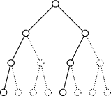
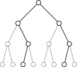
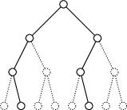
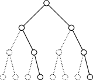

All Paths Lead to the Root
In an attempt to fix the defects of the definition of forward security for Symmetric Searchable Encryption (SSE) schemes, Amjad et al. \autocite{AC:AmjKamMoa23} proposed injection security. This new security property is strictly stronger than most security properties known to date, which makes it particularly challenging to design schemes meeting its requirements. In this work, we show how it is possible to use trees to decorrelate the modification of an index from its effects, hence achieving injection security. In addition to being conceptually simple, our scheme features non-interactive, stateless and mutation-free search operations that allow supporting concurrent readers easily. Finally, the proposed reference implementation is efficient: both \(\Insert\) and \(\Search\) operations execute in milliseconds even when operating on an index with up to a million entries and volumes up to a thousand.
1. Introduction
Symmetric Searchable Encryption (SSE) is a formalism used to study the security of protocols manipulating a document index stored by a distant server: an SSE scheme is a bipartite protocol with one of the party (the server) usually being considered honest-but-curious, and the notion of leakage is used to capture the amount of information that party can acquire by observing the execution of SSE operations. There exists a natural tension between the efficiency of a scheme and its security. SSE schemes resolutely fall into the practical side when compared to more secure schemes like ORAM, but successive innovations have led to constructions proposing stronger security guaranties to the detriment of performance. We stress that in many real-world applications, the performance of a scheme is almost as important as its security since poor performances may hinder its adoption, resulting in essentially no security. While server-side memory is generally not an issue, client-side memory is a particularly constrained resource. However, apart from notable works like \autocite{NDSS:DCPP20}, most SSE schemes have a space complexity that is linear in the number of indexed labels \(L\). Another source of inefficiency that runs even deeper into the SSE literature is the impossibility to securely perform concurrent queries to the index, which stems from the presence of client-side mutable state and the lack of a clear security model. Some recent developments in \autocite{AC:AgaKamMoa24,EPRINT:BreHeb24} made a step in the direction of formalizing security in the presence of concurrent queries, but to the best of our knowledge, no concurrent SSE scheme with a decent security has ever been published. In this work, we propose an SSE scheme with non-interactive, stateless and mutation-free search operations that make it trivially amenable to concurrent search queries provided the server guarantees basic shared-object properties. We believe our scheme opens up a broad range of applications in which lightweight clients query an index managed by one powerful client.
On the security front, forward security – formalized by Bost in \autocite{10.1145/2976749.2978303} as the unlinkability of updates with previous operations – has been considered as a state-of-the-art security property, even though it does not guarantee that future search queries cannot be linked to past updates. A persistent adversary thus eventually learns what forward security attempts to hide. Injection Security is a much stronger property – defined as the unlinkability of updates with all other past and future operations – that has recently been proposed \autocite{AC:AmjKamMoa23} to remedy forward security's shortcomings. We believe it to be a real step forward, which is why we present in this work a new injection-secure SSE scheme named \(\ploc\).
1.1. Related works
The first and only injection-secure SSE scheme to date \autocite{AC:AmjKamMoa23} relies on decorrelating the server-side effects of a modification from its intent as follows: upon modifying bindings for a label \(\ell\), the client saves this modification locally under this label and performs instead the modifications saved under a different label \(\ell'\) chosen independently from \(\ell\). In their scheme the authors used a round-robin strategy going through all the labels by batch. This implies that labels are updated server-side every \(\frac{|\bbL|}{C}\) modifications, where \(\bbL\) is the labeling domain and \(C\) the batch size. Conversely, the size of the client-side state is \(O(\frac{|\bbL|}{C})\) in the worst case. Moreover, in order to achieve injection security, the client must modify a number of values that is independent from \(\ell\), which results in a bandwidth in \(O(C \times S)\) for some constant \(S\) chosen at setup. Conscious of this cost, the authors astutely pad and truncate the set of values indexed under each label to enable users to choose \(S = (1 - \epsilon) \cdot V\) for some loss parameter \(0 < \epsilon \le 1\) and \(V\) an upper-bound on the number of values indexed per label, also chosen at setup. However, the loss cannot be increased past a certain amount without severely damaging the search results, and the bandwidth cost remains \(O(C \times V)\). The users are therefore caught in an impossible dilemma: they must constrain the size of the labeling domain to limit both the client-side stash and insertion bandwidth at the risk of speeding-up query-recovery attacks (since possible labels are fewer, it is easier to tell them apart), or otherwise choose between an acceptable bound on the client-side storage or the bandwidth. Finally, since the very security of this scheme relies on delaying the modification of the server state, it seems impossible to use it as a basis on which to develop a concurrent SSE scheme with anything but a very relaxed concurrency model. All in all, this scheme represents a break-through in the field, but presents costs that may be prohibitively high for many use-cases.
Even though not achieving injection security (nor forward security), we quickly present here \(2ch\) \autocite{PoPETS:APPYY23} since it is conceptually close to ours. This scheme is based on a complete binary tree, in which indexing a value under a label consists in deriving two candidate branches from this label and its current volume using a PRF. The client then fetches those two branches and chooses to place the new value inside the least filled one. Search operations always fetch \(2V\) branches which first \(2\nu(\ell)\) correspond to the branches derived to bind values to this label so far, where \(\nu(\ell)\) is the current volume of the label \(\ell\). Using this technique allows implementing a volume-hiding \autocite{10.1145/3319535.3354213} scheme. The authors also managed to reduce the bandwidth from \(O(\log B)\) to \(O(\log \log B)\) where \(B\) is the maximum number of bindings that can be indexed in the tree by beheading the tree to create a forest of trees of depth \(\log \log B\). The subsequent schemes proposed in the same article build on and attempt to recover the forward and backward securities \autocite{10.1145/3133956.3133980}, but are sub-optimal since they require search operations to perform more work.
1.2. Contributions
In this work, we propose a novel injection-secure SSE scheme based on a different technique to decorrelate a mutation intent from its effects. Like in \autocite{PoPETS:APPYY23}, we rely on a tree structure and values are stored in some node alongside the path leading to the leaf selected using a PRF of the indexing label and its current volume. However, since all paths lead to the root of a tree, the client can fetch truly random branches upon insertion: as long as it possible to compact the resulting subtree enough to make space at the root, the new value can be inserted on its target path. Upon search, all \(V\) branches associated to a label are read in order to find the indexed values. Using this technique allows us to build a simple SSE scheme with very desirable properties:
- insertions are only required to maintain a \(O(L)\) client-side stash, where \(L\) is the number of labels currently indexed, to store their associated volumes. This is a significant improvement over the \(O(\frac{|\bbL|}{C})\) bound from \autocite{AC:AmjKamMoa23}. Our scheme implements insert operations using a single round-trip and \(O(c n \left(\lg(\frac{B}{n}) + 2\right))\) bandwidth, where \(n\) is the number of branches fetched from the tree for compaction, \(c\) the capacity of each node and \(B\) the total number of indexed bindings;
- searches need only know the key and do not perform any mutation, which allows them to be trivially concurrent and hence to implement a single-writer, several-readers system that only leaks the search pattern. Even though our insertions cannot be used by concurrent clients due to the mutable state that is the label-volume map, we consider it a net improvement over the scheme proposed in the recent article from Agarwal et al. \autocite{AC:AgaKamMoa24} that doesn't even guarantee forward security in the context of concurrent operations. Our scheme implements search operations using a single round-trip and a \(O(c \cdot V \lg B)\) bandwidth.
- additionally, we show how to apply some of the standard techniques from the literature to implement a more expressive interface, for example that support deletions, and to make insertions stateless.
2. Preliminaries
2.1. Structured Encryption
Structured Encryption (STE) was first introduced in \autocite{chase2010structured} to allow a client to query a data structure stored by a server with controlled leakages. An STE scheme is based on an Abstract Data Type (ADT) defined as follows:
An abstract data type is defined as a pair \((\bbS, \bbO)\) of states and operations on those states which every realizations of this abstract data type must support. Without loss of generality, we constrain operations in \(\bbO\) to be parameterized by their argument and result sets \(\bbA\) and \(\bbR\) and to be of type \(\bbA \times \bbS \rightarrow \bbR \times \bbS\).
Given an abstract data type \(\cT = (\bbS, \bbO)\), a \(\cT\) encryption scheme is a bipartite protocol involving a client and a server that supports the following operations:
- \((k, \stt; EDS) \gets \Setup(DS; )\) in which the client takes as input a valid data structure \(DS \in \bbS\), and at the end of which the client receives a key \(k\) and a state \(\stt\), and the server receives the encrypted data structure \(EDS\) corresponding to \(DS\);
for each operation \(\op \in \bbO\) parameterized by \(\bbA\) and \(\bbR\):
- \((\res, \stt'; EDS') \gets \op(k, \args, \stt; EDS)\) in which the client takes as input the key \(k\), a state \(\stt\) and some arguments \(\args \in \bbA\), the server takes as input an encrypted data structure \(EDS\) corresponding to a data-structure \(DS \in \bbS\), and at the end of which the client receives the results \(\res \in \bbR\) and the server the encrypted data structure \(EDS'\) corresponding to the data structure \(DS' \in \bbS\), where \(\res\) and \(DS'\) correspond to what locally applying \(\op\) on \(\args\) and \(DS\) would return.
Even though the standard definition for a structured encryption scheme expects the setup to take as argument an initial data structure, the schemes described in this article do not. However, it is easy to see that an alternative setup procedure taking as argument a data structure can be obtained without additional leakage by executing a setup followed by one or more update operations. Indeed, \(\ploc\) insert operation only has trivial leakages and so does the tree merge operation when taking the entire tree as argument.
2.2. Multi-map Encryption Scheme
One particular instance of structured encryption has been at the center of most of the works in the literature for its immediate applicability: the multi-map encryption scheme.
A (semi-dynamic) multi-map is an abstract data type parameterized by a label domain \(\bbL\) and a value domain \(\bbV\), which valid states are the functions in \(\bbL \rightarrow \bbV^*\), where \(\bbV^* = \bot \cup \bbV \times \bbV^*\), and which operations are:
- \(((v_i)_i, \MM) \gets \Search(\ell, \MM)\) takes as argument a label \(\ell\) and a valid state \(\MM\), and returns the (possibly empty) list of values bound to that label by the given state;
- \((\bot, \MM') \gets \Insert((\ell, v), \MM)\) takes as argument a label \(\ell \in \bbL\), a value \(v \in \bbV\) and a state \(\MM\), and returns the new state \(\MM'\) such that \(\MM'(\ell') = \MM(\ell')\) for each label \(\ell' \ne \ell\) and \(\MM'(\ell) = (v, \MM(\ell))\) otherwise.
A multi-map is said to be fully-dynamic if it additionally supports:
- \((\bot, \MM') \gets \Delete((\ell, v), \MM)\) takes as argument a label \(\ell \in \bbL\), a value \(v \in \bbV\) and a state \(\MM\), and returns the new state \(\MM'\) such that \(\MM'(\ell') = \MM(\ell')\) for each label \(\ell' \ne \ell\) and \(\MM'(\ell) = \MM(\ell) \setminus \ell\) otherwise.
A (semi-dynamic) multi-map encryption scheme is therefore the protocol exposing the following operations which semantics is given by the STE definition:
- \(((v_i)_i, \stt'; \EMM) \gets \Search(k, \ell, \stt; \EMM)\);
- \((\bot, \stt'; \EMM') \gets \Insert(k, (\ell, v), \stt; \EMM)\).
A multi-map encryption scheme is said to be fully-dynamic if it additionally exposes:
- \((\bot, \stt'; \EMM') \gets \Delete(k, (\ell, v), \stt; \EMM)\).
2.3. Symmetric Searchable Encryption
While structured encryption addresses the abstract and fundamental problem of securing data-structures, Symmetric Searchable Encryption (SSE) as described in \autocite{10.1145/1180405.1180417} by Curtmola et al. addresses the problem of securing a specific use-case in which a client wishes to retrieve the list of document IDs of all documents matching a given label, from a collection of documents stored in a remote server. While the interface defined in \autocite{10.1145/1180405.1180417} differs from those of a multi-map, it is trivial to implement an SSE scheme from a multi-map encryption scheme. For this reason, we claim in this work to present a new SSE scheme while only presenting a new encrypted multi-map implementation.
2.4. Leakages and adaptive security
The leakage function plays a central role in the SSE literature since it is used to quantify the information leaked to the adversary by each operation. In this work, we consider the notion of adaptive security against a honest-but-curious, polynomial-time server.
An STE scheme \(\Sigma\) is said to be \(\cL\)-adaptively-secure if there exists a simulator \(\phi\) such that for any stateful honest-but-curious PPT adversary \(\cA\) and any auxiliary information \(z \in \{0,1\}^*\): \[\left| P(\mathbf{Real}_{\Sigma,\cA}(1^\lambda, z) = 1) - P(\mathbf{Ideal}_{\Sigma, \cA}^{\phi, \cL}(1^\lambda, z) = 1) \right| = \mathtt{negl}(\lambda), \] where the real and ideal games are defined as follows:
- the challenger either executes the client code of the STE scheme \(\Sigma\) (real game) or the composition \(\phi \circ \cL\) of the simulator with the leakage function (ideal game), while the adversary plays the server code of the STE scheme \(\Sigma\).
- the adversary adaptively chooses a sequence of (polynomially many in \(\lambda\)) ADT operations that are jointly executed with the challenger.
- the adversary outputs a bit \(b\in \{0,1\}\).
2.5. Security properties
If leakage functions capture the information that is leaked by SE operations, evaluating the level of privacy guaranteed by a given leakage or even establishing an order relation on the leakages that reflects those security guarantees remains a difficult problem \autocites[]{PoPETS:BosFou19}[][]{10.1145/3548606.3560593}. It has thus become idiomatic to describe scheme privacy using security properties, which are associated to the set of attacks known to hold against them.
The most important source of attacks against SSE schemes is the search pattern – sometimes called query equality – which allows an attacker to partition a sequence of search queries with respect to the searched label (without always being able to guess which are those labels).
Given a sequence of \(m\) search operations \((o_1, ..., o_m)\), the search pattern, noted \(\spattern\), is the matrix \(M \in \{0,1\}^{m \times m}\) such that \(M[i][j] = i\) if and only if the operations \(o_i\) and \(o_j\) both search for the same label.
If the label domain \(\bbL\) is countable, there exists a bijection \(idx\) from \([0,|\bbL|[\) to \(\bbL\) and the matrix-based definition of the search pattern is equivalent to leaking \(\pi_{[0,|\bbL|[} \circ idx^{-1} (\ell)\), where \(\pi_{[0,|\bbL|[}\) is a random permutation on \([0,|\bbL|[\). This definition is easier to use in practice since it is comes up more naturally in the proofs.
Injection security is a property of the leakage functions of multi-map encryption schemes that has recently been defined in \autocite{AC:AmjKamMoa23} guaranteeing that no link can ever be made between a mutation (insertion or deletion) and any other past or future operation. While we refer the reader to the original article for its game-based definition, we give here the sufficient condition we use in this article:
A leakage function \(\cL\) is said to be injection-secure if \(\cL(\op, \args) = (\op, \spattern)\) if \(\op\) is \(\Search\) and \(\op\) otherwise.
See the proof of Theorem 3.3 from \autocite{AC:AmjKamMoa23}.
2.6. Notations
In the rest of this article, we make use of the notations listed in table 1.
| notation | description |
|---|---|
| \(s\) | node size |
| \(c\) | node capacity |
| \(\ell\) | label |
| \(v\) | value |
| \(d\) | depth |
| \(n\) | number of branches selected for compaction |
| \(B\) | upper-bound on the number of bindings |
| \(L\) | upper-bound on the number of labels |
| \(N\) | upper-bound on the number of tree leaves |
| \(V\) | upper-bound on the maximum label volume |
| \(\phi\) | \((s,D)\)-tree-encryption-scheme simulator |
| \(\psi\) | \(\ploc\) simulator |
3. Description
3.1. \(\ploc\)
The complete algorithm is given in appendix 10.51. We have chosen to implement it in the Scheme programming language \autocite{10.5555/1618542} for its well-defined semantics and conciseness2, which incidentally provides a reference implementation for \(\ploc\). A description of the syntax required to understand this code is provided in appendix 9. The present section details the most important aspects of the algorithm step by step. It is assumed that the following names are in scope:
cthe capacity of each node (i.e. the maximum number of datums they can store);nthe (64-bit) number of branches to compact per insertion;Bthe (64-bit) maximum number of bindings allowed;Vthe (64-bit) maximum volume allowed;(rng)a cryptographic random-number generator producing 64-bit values;(H key label volume)a cryptographic hash function taking as input a 128-bit key, a label bit-string of arbitrary size and an integer, and produces a 128-bit integer. Its only required security guarantee is to be indistinguishable from a pseudo-random function;
Since \(\ploc\) is based on a complete binary tree of \(N\) leaves, we introduce
here some vocabulary used to describe trees. A branch is defined as the
bit-string representing the choices to be made at each level between the left
and the right child of a node. This bit-string is encoded as an integer in which
the choice made at the root is encoded by the bit of exponent zero. This choice
of representation allows for efficient and simple tree traversals. A branch
needs not be smaller that \(N\) since the bits following the first \(\lg N\) ones
are ignored by the traversal. This allows using the output of H as branch.
The ID of a given node at depth \(d\) is the prefix of length \(d\) of any branch
to which this node belongs: it is therefore the bit-string representing the
sequence of choices made at each level from the root to that node, encoded as an
integer the same way a branch is.
To manipulate this complete binary tree, \(\ploc\) relies on a \((s, N)\)-tree encryption scheme which is formally defined in section 3.2. This scheme exposes the following operations:
(tree-setup)creates a server-side encrypted complete binary tree ofNleaves and returns a freshly generated key;(tree-fetch key branches)returns the subtree defined by the given branches from the main tree;(tree-merge key subtree)merges the given subtree with the main tree by replacing all the main-tree branches by their equivalent subtree branches.
3.1.1. Setup procedure
The setup simply consists in initializing the server-side tree used by \(\ploc\):
(define (ploc-setup) (tree-setup))
3.1.2. Insertion procedure
In \(\ploc\) as in most SSE, inserting requires the client to store the volumes of each label. This can be done using a hash-map:
(define volumes (make-hmap)) (define (get-volume label) (hmap-find volumes label 0)) (define (increment-volume label) (let ((volume (get-volume label))) (hmap-bind! volumes label (+ volume 1))))
Each binding is stored wrapped inside a datum that holds both the indexed value, and a branch index called target.
(define (new-datum target value) (vector target value)) (define (datum->target datum) (vector-ref datum 0)) (define (datum->value datum) (vector-ref datum 1))
The target is a pseudo-random number computed using the cryptographic hash H
and the key.
(define (get-target key label volume) (H key label volume))
(define (make-datum key label value) (let* ((volume (get-volume label)) (target (get-target key label volume))) (new-datum target value)))
Storing the target branch in each datum enables future modifications to compact the tree while maintaining the invariant (I) each datum is on its target branch, and the post-condition (P) no datum can be pushed further down.
The compaction is performed on a subtree extracted from the main tree using the
tree-fetch procedure. The branches used to select this subtree are generated
using a procedure of no argument called a scheduler. Some scheduling
strategies are better than others. Indeed, if the same set of branches were to
be constantly scheduled for compaction, the datums which target branches have a
small intersection with this set of branches would accumulate near the root of
the tree, eventually causing an overflow when no space can be found to place a
new datum. We therefore choose a scheduling strategy that sweeps the tree
branches in a regular and uniform way: the lower bits are all covered by at
least one of the branches and each branch covers the remaining bits in a
circular fashion.
For example with \(N=8\) and \(n=2\), the two upper-most levels representing the two lowest bits are all covered. Then, at each call to the scheduler, these bits are prepended the bits generated by selecting the next integer, resulting in these subtrees:
   
The following make-scheduler procedure generates a stateful scheduler drawing
batches of n branches.
(define (make-scheduler n) (assert (integer? (lg n))) (let ((counter 0) (prefixes (iota n))) (λ () (set! counter (+ counter 1)) (map (λ (pfx) (+ pfx (* counter n))) prefixes))))
(define scheduler (make-scheduler n))
The compaction is a recursive procedure: it accumulates the data targeting each
leaf on its way down, and stores it back to the tree on its way up, saturating
the nodes with the c first remaining datums selected using the take
procedure.
(define (take n xs) (let loop ((n n) (xs xs) (taken (list))) (if (or (zero? n) (null? xs)) (values taken xs) (loop (- n 1) (cons (head xs) taken) (tail xs)))))
At each level, to tell apart data targeting the left and right subtrees, the
procedure (split-with pred? xs) is used. It returns two lists: one containing
values that match the given predicate and one containing those that don't.
(define (split-with pred? xs) (let loop ((xs xs) (lhs (list)) (rhs (list))) (match xs ((x . xs) (if (pred? x) (loop xs (cons x lhs) rhs) (loop xs lhs (cons x rhs)))) (() (values lhs rhs)))))
The predicate (go-left? depth branch) returns whether the choice encoded at
the given depth in the given branch is to select the left child.
(define (go-left? depth branch) (zero? (&& (<< 1 depth) branch)))
(define (compact node depth data) (define (left-datum? datum) (go-left? depth (datum->target datum))) (define (direct-data data) (split-with left-datum? data)) (match node (#(node-data l-child r-child) (let*-values (((l-data r-data) (direct-data (append node-data data))) ((l-child l-data) (compact l-child (+ depth 1) l-data)) ((r-child r-data) (compact r-child (+ depth 1) r-data)) ((node-data rest) (take c (append l-data r-data)))) (values (make-node node-data l-child r-child) rest))) (_ (values node data))))
The preservation of the invariant I, can be proven by recurrence by showing
that a datum is accumulated up to the last node in the intersection of its
target branch with the fetched subtree. This proof relies on the correctness of
the left-datum? and split-with procedures and the use of sentinel nodes that
make processing the last node of the intersection like any other node. Once this
is done, the rest of the proof follows trivially since the nodes in which a
datum can be placed back are the nodes visited during the recursive calls which
have been proven to belong to its target branch. Proving P is simple since the
backtracking saturates the lower nodes first, until there is no datum left or
the tree overflows.
In order to insert a new datum, \(\ploc\) simply calls the compaction procedure on a truly random subtree with this datum.
(define (ploc-insert key label value) (let ((data (list (make-datum key label value))) (subtree (tree-fetch key (scheduler)))) (let-values (((subtree data) (compact subtree 0 data))) (unless (null? data) (error "tree overflow" subtree label value)) (increment-volume label) (tree-merge key subtree))))
3.1.3. Search procedure
The search procedure is much simpler: it fetches the subtree generated by all branches possibly targeted by values indexed under the searched label,
(define (get-all-targets key label) (map (λ (v) (get-target key label v)) (iota V)))
and for each target branch, filters out data that doesn't target the correct label.
(define (find-data subtree target) (define (matching-datum? datum) (= (datum->target datum) target)) (filter matching-datum? (branch-data subtree target)))
Only one datum per target should be found since target contains enough
entropy.
(define (ploc-search key label) (let* ((targets (get-all-targets key label)) (subtree (tree-fetch key targets))) (reverse (foldl (λ (result target) (match (find-data subtree target) (() result) ((datum) (cons (datum->value datum) result)) ( data (error ploc-search "more than one datum found" data)))) (list) targets))))
3.2. Tree Encryption Scheme
\(\ploc\) relies on a \((s, N)\)-Tree STE scheme, defined as the structured encryption scheme based on the ADT parameterized by \(s\) and $N, which valid states are the complete binary trees of \(N\) leaves and nodes of size \(s\), and which operations are:
- \((t, T') \gets \Fetch(\mathrm{branches}, T)\), that returns the subtree \(t\) defined by the given branches in \(T\);
- \((\bot, T') \gets \Merge(t, T)\) that merges the given subtree \(t\) with the tree \(T\) by replacing all tree nodes by their equivalent in the subtree when it exists.
The present section describes an implementation of this scheme for completeness only: since it is used as a black-box by \(\ploc\), and in order to reduce the length of the present article, the security proof of this implementation is not given. Following the design choices discussed in \autocite{EPRINT:BreHeb24}, we rely on a server abstraction exposing a linear 128-bit memory space with the following operations:
(memory-setup)initializes a new server-side abstraction of a 128-bit linear memory space;(memory-read addresses)atomically reads from given addresses and returns the list of words bound to these addresses, or the special valuefreein case no word was found;(memory-write bindings)atomically writes the given bindings to memory.
Additionally, the present implementation depends on an authenticated encryption scheme like AES256-GCM.
3.2.1. Tree representation
A tree node is represented as a vector containing its data and a pointer to both its children.
(define (make-node data l-child r-child) (vector data l-child r-child)) (define (node->data node) (vector-ref node 0)) (define (node->l-child node) (vector-ref node 1)) (define (node->r-child node) (vector-ref node 2))
In order to fit a tree into a linear memory, we need to associate each node to
an address. We choose to index each node using the pair (depth node-id). The
node ID of the root is 0, and subsequent node IDs may be computed as follows:
(define (l-child-id node-id) (+ (<< node-id 1) 0)) (define (r-child-id node-id) (+ (<< node-id 1) 1)) (define (next-node-id node-id depth target) (if (go-left? depth target) (l-child-id node-id) (r-child-id node-id)))
Computing the address of a node therefore simply consists in hashing its
associated (dept node-id) onto 128 bits using the hash function G, which is
only required to have a good-enough collision resistance.
(define (make-address node-id depth) (G node-id depth))
Finally, we can write helpers to flatten a tree into bindings and vice-versa.
The tree->bindings procedure takes as argument a tree and a data->word
procedure, and returns a list of memory bindings encoding this tree.
(define (tree->bindings tree data->word) (let loop ((node tree) (node-id 0) (depth 0)) (match node (#(data l-child r-child) (let ((address (make-address node-id depth)) (word (data->word data))) (append (list (cons address word)) (loop l-child (l-child-id node-id) (+ depth 1)) (loop r-child (r-child-id node-id) (+ depth 1))))) (_ (list)))))
The bindings->tree procedure takes as argument get-word, which returns the
word bound to the given address, free if this address is free and unread if
this address is not part of the target set, and word->data which returns the
data encoded by a given word.
(define (bindings->tree get-word word->data) (define sentinel (list)) (define (unread? word) (eq? word 'unread)) (define (free? word) (eq? word 'free)) (let loop ((node-id 0) (depth 0)) (let* ((address (make-address node-id depth)) (word (get-word address))) (if (unread? word) sentinel (make-node (if (free? word) (list) (word->data word)) (loop (l-child-id node-id) (+ depth 1)) (loop (r-child-id node-id) (+ depth 1)))))))
3.2.2. Setup
The tree-setup simply consists in setting-up a new server-side memory, and
returning a fresh AE key. Not initializing the tree avoids a \(O(N)\) setup
without leaking any additional information in the persistent-adversary model,
which is why we designed the bindings->tree operation to be able to
distinguish free addresses from unread addresses, and to consider the former as
empty nodes.
(define (tree-setup) (memory-setup) (AE-keygen))
3.2.3. Fetch
Fetching simply consists in deriving the addresses of each node in the subtree defined by the given leaf IDs, reading them from memory, decrypting them and extracting the data they contain. In order to derive the addresses of the subtree, we use a naive approach deriving the addresses defined by each branches, adding them into a hash-set to guarantee unicity and returning the list of addresses it contains once the addresses defined by each branch has been added to it.
(define (subtree-addresses branches) (hset->list (foldl (λ (addresses branch) (foldl hset-add! addresses (branch-addresses branch))) (make-hset) branches)))
The addresses defined by each branch are derived in a straightforward, recursive manner.
(define (branch-addresses branch) (let loop ((node-id 0) (depth 0)) (if (< max-depth depth) (list) (cons (make-address node-id depth) (loop (next-node-id node-id depth branch) (+ depth 1))))))
We can now write the complete tree-fetch procedure which proceeds by reading
all subtree addresses from the server, and building the subtree by recursively
finding the data corresponding to each node, from the root. Note that the call
to hmap-find here returns the special value unread.
(define (tree-fetch key branches) (define AE (AE-init key)) (let* ((addresses (subtree-addresses branches)) (words (memory-read addresses)) (bindings (foldl hmap-bind! (make-hmap) addresses words))) (bindings->tree (λ (address) (hmap-find bindings address 'unread)) (λ (bytes) (bytes->data (AE-decrypt AE bytes))))))
3.2.4. Merge
Merging a tree simply consists in going through each node and to generate its associated binding, and finally to write all the generated bindings server-side.
(define (tree-merge key subtree) (define AE (AE-init key)) (let ((data->word (λ (data) (AE-encrypt AE (data->bytes data))))) (memory-write (tree->bindings subtree data->word)) (values)))
4. Security analysis
In this section, we assume the existence of a \(\cL_{\tau}\)-adaptively-secure \((s, N)\)-tree encryption scheme, where \(\cL_\tau\) is defined as follow:
- \(\cL_{\tau}(\Setup) = \Setup\);
- \(\cL_{\tau}(\Fetch, \{b_i\}) = (\Fetch, \{b_i\})\);
- \(\cL_{\tau}(\Merge, \mathrm{subtree}) = (\Merge, \{b_i\})\).
That is, the tree encryption scheme operations only leak the branches defining the subtree they are working on. Such a scheme is actually trivial to designed and one possible implementation is described in section 3.2.
Given a \(\cL_{\tau}\)-adaptively-secure \((s, N)\)-tree encryption scheme with public parameters \(pp_{\tau}\), \(\ploc\) is a \(\cL_{\pi}\)-adaptively-secure \((\bbL,\bbV)\)-multi-map encryption scheme with public parameters \((pp_{\tau}, c, n, B, V)\), where \(s = c\lg|\bbV|\), \(N=B\) and \(\cL_{\pi}\) is defined as follows:
- \(\cL_{\pi}(\Setup) = \Setup\)
- \(\cL_{\pi}(\Search, \ell) = (\Search, \spattern)\)
- \(\cL_{\pi}(\Insert, \ell, v) = \Insert\)
Given the domain \(\bbL\) and codomain \(\bbV\), the public parameters \((c, n, B, V)\), and a \(\cL_{\tau}\)-adaptively-secure \((c\lg|\bbV|, B)\)-tree encryption scheme with public parameters \(pp_\tau\), there exists a simulator \(\phi_{pp_\tau}\) such that \(\phi_{pp_\tau} \circ \cL_{\tau}\) is indistinguishable from a legitimate tree-encryption-scheme client in the security game given in 2.4. In the following sections, we show how to build a simulator \(\psi^{pp_{\tau}}_{c, n, B, V}\) such that \(\psi^{pp_{\tau}}_{c, n, B, V} \circ \cL_\pi\) is indistinguishable from a legitimate \(\ploc\) client in the same game. The full code of the simulator is given in section 4.5.
Note that in the implementation given in section 3.2, the only tree-encryption-scheme public parameter is the encryption overhead.
Given a \(\cL_{\tau}\)-adaptively-secure \((s, N)\)-tree encryption scheme with public parameters \(pp_{\tau}\), \(\ploc\) is an injection-secure \((\bbL,\bbV)\)-multi-map encryption scheme with public parameters \((pp_{\tau}, c, n, B, V)\), where \(s = c\lg|\bbV|\), \(N = B\).
Direct using the sufficient condition from \autocite{AC:AmjKamMoa23}.
4.1. Setup
Recall the \(\ploc\) setup simply calls the tree setup, which only leaks the name of the operation:
(define (psi-setup) (phi 'setup))
Therefore, a \(\ploc\) setup only has trivial leakages: \[\cL_\pi(\Setup) = \Setup.\]
4.2. Search
In a nutshell, the only client-server interaction performed by a search consists in fetching the subtree targeted by the searched label. In particular, this subtree does not depend on the volume of this label but on \(V\) which is a public \(\ploc\) parameter. Then by security of the tree scheme, reading this subtree only leaks the branches that generate it, which in turn only depends on the search pattern which is therefore the only non-trivial leakage.
Recall the search operation works as follows:
(define (get-target key label volume) (H key label volume)) (define (get-all-targets key label) (map (λ (v) (get-target key label v)) (iota V))) (define (find-data subtree target) (define (matching-datum? datum) (= (datum->target datum) target)) (filter matching-datum? (branch-data subtree target))) (define (ploc-search key label) (let* ((targets (get-all-targets key label)) (subtree (tree-fetch key targets))) (reverse (foldl (λ (result target) (match (find-data subtree target) (() result) ((datum) (cons (datum->value datum) result)) ( data (error ploc-search "more than one datum found" data)))) (list) targets))))
It can be transformed without adversarial advantage into a procedure ignoring the fetched tree:
@@ -5,21 +5,7 @@
(map (λ (v) (get-target key label v))
(iota V)))
-(define (find-data subtree target)
- (define (matching-datum? datum)
- (= (datum->target datum) target))
- (filter matching-datum? (branch-data subtree target)))
-
(define (ploc-search key label)
- (let* ((targets (get-all-targets key label))
- (subtree (tree-fetch key targets)))
- (reverse
- (foldl (λ (result target)
- (match (find-data subtree target)
- (() result)
- ((datum) (cons (datum->value datum) result))
- ( data (error ploc-search
- "more than one datum found"
- data))))
- (list)
- targets))))
+ (let* ((targets (get-all-targets key label))
+ (subtree (tree-fetch key targets)))
+ (values)))
which gives:
(define (get-target key label volume) (H key label volume)) (define (get-all-targets key label) (map (λ (v) (get-target key label v)) (iota V))) (define (ploc-search key label) (let* ((targets (get-all-targets key label)) (subtree (tree-fetch key targets))) (values)))
In the oracle model, we can replace the keyed hash function with a negligible adversarial advantage by a call to a PRF and inline this call.
@@ -1,11 +1,4 @@
-(define (get-target key label volume)
- (H key label volume))
-
-(define (get-all-targets key label)
- (map (λ (v) (get-target key label v))
- (iota V)))
-
(define (ploc-search key label)
- (let* ((targets (get-all-targets key label))
+ (let* ((targets (map (λ (v) (PRF label v)) (iota V)))
(subtree (tree-fetch key targets)))
(values)))
which gives:
(define (ploc-search key label) (let* ((targets (map (λ (v) (PRF label v)) (iota V))) (subtree (tree-fetch key targets))) (values)))
Then, by security of the PRF, the label can be replaced by any bijection
\(f:\mathbb{L}\rightarrow [1,|\bbL|]\), transforming the given label into its
index label-idx:
@@ -1,4 +1,4 @@
-(define (ploc-search key label)
- (let* ((targets (map (λ (v) (PRF label v)) (iota V)))
+(define (ploc-search key label-idx)
+ (let* ((targets (map (λ (v) (PRF label-idx v)) (iota V)))
(subtree (tree-fetch key targets)))
(values)))
which gives:
(define (ploc-search key label-idx) (let* ((targets (map (λ (v) (PRF label-idx v)) (iota V))) (subtree (tree-fetch key targets))) (values)))
By security of the tree encryption scheme, the call to tree-fetch can be
replaced by a call to \(\phi_{pp_\tau} \circ \cL_{\tau}\). Since
\(\cL_{\tau}(\Fetch, \mathrm{targets}) = (\Fetch, \mathrm{targets})\),
(tree-fetch key targets) is indistinguishable from (phi 'fetch targets):
@@ -1,4 +1,4 @@
-(define (ploc-search key label-idx)
+(define (psi-search label-idx)
(let* ((targets (map (λ (v) (PRF label-idx v)) (iota V)))
- (subtree (tree-fetch key targets)))
+ (subtree (phi 'fetch targets)))
(values)))
which gives:
(define (psi-search label-idx) (let* ((targets (map (λ (v) (PRF label-idx v)) (iota V))) (subtree (phi 'fetch targets))) (values)))
Therefore, the only non-trivial leakage of a \(\ploc\) search is some indexing on the labels, which is the definition of leaking the search pattern: \[\cL_\pi(\Search, \ell) = (\Search, \spattern).\]
4.3. Insert
Recall the insertion works as follows:
(define (get-target key label volume) (H key label volume)) (define (make-datum key label value) (let* ((volume (get-volume label)) (target (get-target key label volume))) (new-datum target value))) (define (ploc-insert key label value) (let ((data (list (make-datum key label value))) (subtree (tree-fetch key (scheduler)))) (let-values (((subtree data) (compact subtree 0 data))) (unless (null? data) (error "tree overflow" subtree label value)) (increment-volume label) (tree-merge key subtree))))
and suppose for now that compaction never overflows. The insertion can therefore be reduced without adversarial advantage to a procedure that ignores compaction error:
@@ -9,8 +9,6 @@
(define (ploc-insert key label value)
(let ((data (list (make-datum key label value)))
(subtree (tree-fetch key (scheduler))))
- (let-values (((subtree data) (compact subtree 0 data)))
- (unless (null? data)
- (error "tree overflow" subtree label value))
+ (let ((subtree (compact subtree 0 data)))
(increment-volume label)
(tree-merge key subtree))))
By security of the tree encryption scheme, the call to (tree-fetch key
targets) can be replaced with only negligible adversarial advantage by (phi
'fetch targets), and the call to (tree-merge key subtree) can similarly be
replaced by a call to (phi 'merge targets).
@@ -7,8 +7,9 @@
(new-datum target value)))
(define (ploc-insert key label value)
- (let ((data (list (make-datum key label value)))
- (subtree (tree-fetch key (scheduler))))
- (let ((subtree (compact subtree 0 data)))
+ (let* ((data (list (make-datum key label value)))
+ (targets (scheduler))
+ (subtree (phi 'fetch targets)))
+ (let ((subtree (compact subtree 0 (list datum))))
(increment-volume label)
- (tree-merge key subtree))))
+ (phi 'merge targets))))
which gives:
(define (get-target key label volume) (H key label volume)) (define (make-datum key label value) (let* ((volume (get-volume label)) (target (get-target key label volume))) (new-datum target value))) (define (ploc-insert key label value) (let* ((data (list (make-datum key label value))) (targets (scheduler)) (subtree (phi 'fetch targets))) (let ((subtree (compact subtree 0 (list datum)))) (increment-volume label) (phi 'merge targets))))
Finally, removing unused variables can be performed without adversarial advantage:
@@ -1,15 +1,4 @@ -(define (get-target key label volume) - (H key label volume)) - -(define (make-datum key label value) - (let* ((volume (get-volume label)) - (target (get-target key label volume))) - (new-datum target value))) - -(define (ploc-insert key label value) - (let* ((data (list (make-datum key label value))) - (targets (scheduler)) - (subtree (phi 'fetch targets))) - (let ((subtree (compact subtree 0 (list datum)))) - (increment-volume label) - (phi 'merge targets)))) +(define (psi-insert) + (let ((targets (scheduler))) + (phi 'fetch targets) + (phi 'merge targets)))
which gives:
(define (psi-insert) (let ((targets (scheduler))) (phi 'fetch targets) (phi 'merge targets)))
Therefore a \(\ploc\) insertion only has trivial leakages if compaction does not overflow. The following section gives constraints on \(c\) to guarantee the absence of overflow with overwhelming probability in the security parameter \(\lambda\).
4.4. Compaction overflow
We need to prove two different properties of the compaction process:
- a static property \(\mathbf{S}\) guaranteeing that the tree does not overflow in its maximally compacted state. This is a classic requirement with which most tree algorithms need to comply and has a well known solution in the balls-and-bins model (see for example \autocite{10.1007/3-540-49543-6_13}): it is enough to allocate \(\frac{B}{N} + \frac{a\ln N}{\ln \ln N}\), \(a>1\) slots to each leaf in order to guarantee \(\mathbf{S}\) with a probability in \(1 - o(1)\), where \(N\) is the number of leaves in the tree, \(B\) the total number of values inserted (which we shall call bindings in our context). However, since the absence of overflow is critical for the rest of the security proof to hold, we will need to work out the proof of an upper bound with probability \(1-2^{-\lambda}\).
- a dynamic property \(\bD\) guaranteeing that a congestion leading to an overflow at the root only happen with a probability negligible in \(\lambda\) in the worst case. To the best of our knowledge, this kind of probability is not standard.
First, recall that given a random variable \(X\) following a binomial law of parameter \(B\) and \(p\), the Chernoff-Hoeffding theorem \autocite{chernoff_1952,Hoeffding1963probabilityif} allows bounding the probability of the upper tail of that distribution:
\[\begin{array}{ccl} P(X \ge k) & \le & \exp\left(-B \cdot \mathrm{D}\left(\frac{k}{B}||p \right)\right) \\ & \le & \left[\left(\frac{k}{Bp} \right)^{\frac{k}{B}} \left( \frac{1 - \frac{k}{B}}{1-p} \right)^{1 - \frac{k}{B}}\right]^{-B} \\ & \le & \left(\frac{Bp}{k} \right)^k \left( \frac{1}{1 - \frac{k}{B}} \right)^{B(1 - \frac{k}{B})} \\ & \le & \left(\frac{Bp}{k} \right)^k e^{B\frac{k}{B}} \\ & \le & \left(\frac{eBp}{k} \right)^k \\ \end{array}\]In what follows, we will be are interested in finding the smallest integer value of \(k\) such that \(m \times P(X \ge k) \le 2^{-\lambda}\) for some multiplicity \(m\) which value will depend on the proof. We therefore pose:
\[\begin{equation} x(B,p,\lambda) \left(\ln(x(B,p,\lambda)) - \ln(Bp) - 1 \right) = \lambda \ln(2) + \ln(m) \end{equation}\]and call \(k^{\lambda, m}_{B, p} = \lceil x(B, p, \lambda) \rceil -1\), the smallest integer such that \(P(X \le k^{\lambda, m}_{B, p})\) holds with overwhelming probability.
4.4.1. Static bound
Since \(\ploc\) guarantees that the target leaves are selected using a PRF that is never called twice with the same inputs, we can consider the number of bindings targeting a leaf node to follow a binomial law of parameter \(B = N\) and \(p = N^{-1}\). Therefore we have: \[P\left(\max_{1\le i \le N} X_i \ge k \right) \le N \times P(X_1 \ge k)\] and maximum number of bindings received in a leaf is \(k^{\lambda, N}_{ N, N^{-1}}\) with overwhelming probability in \(\lambda\). Rather than allocating each leaf with this capacity, we rely on the fact that \(\bS\) is a static property that must only hold for the maximally compacted state of the tree. We can thus use slots from the parent nodes to store overflowing values. Let us count the number \(\omega(c, d, b)\) of bindings overflowing from a node at level \(d\) knowing that \(b\) bindings have been inserted in its subtree and each node has a capacity \(c\). In the worst case, all the bindings are stored in a contiguous region of the tree. Calling \(k_{b,d}^{\lambda} = k_{b,2^{-d}}^{\lambda, 2^d}\), we can bound \(\omega^{\lambda}_c(b, d)\) by the overflow of its left subtree in which at most \(k^{\lambda}_{B, d+1}\) bindings have been inserted, plus the overflow of its right subtree in which the remaining bindings have been inserted, minus its capacity \(c\): \[\omega^{\lambda}_c( b, d) = \omega^{\lambda}_c(\min(b, k^{\lambda}_{B,d+1}), d+1) + \omega^{\lambda}_c(b- \min(b,k^{\lambda}_{B, d+1}), d+1) - c,\] with the border condition: \(\omega^{\lambda}_c(b, \lg N) = b - c\). Hence, guaranteeing \(\mathbf{S}\) can be done by choosing a value of \(c\) such that \(\omega^{\lambda}_c(B, 0) = 0\), which is easy using a numerical application (cf tables 2 and 3 below).
4.4.2. Dynamic bound
While \(\ploc\) has been defined to be independent from the scheduler used to select the subtree to fetch upon each insertion, the proof of \(\mathbf{D}\) given here heavily relies on the use of the uniform scheduler presented in section 3.1.2. Recall that this scheduler guarantees that at each depth \(d\), a node is alternatively selected with its left and right child. The compaction period of each node at a depth \(d\) is thus \(T(n, d) = \frac{2^d}{n}\), where \(n\) is the number of branches selected by the scheduler and must be a power of two. The second and more important consequence is that in the absence of congestion, the lifetime of a datum in any given node cannot be more than one compaction cycle. Indeed, if a datum is placed in a given node at a given compaction, it means the next node on its target path is the child of this node that hasn't been selected for compaction. At the next compaction cycle, that child will be selected and this datum pushed along its target path at least one level down.
With this in mind, consider for once that nodes have an unbounded capacity. For the same reason as in the static proof, we can consider the number of bindings held by a node at depth \(d < \lg(N)\) to follow a binomial law of parameter \(T(n, d)\) and \(p(d+1)\), where \(p(d) = 2^{-d}\). Indeed, \(T(n, d)\) bindings have been inserted in the tree since the last compaction, and a binding targets that node if and only if (unbounded node capacity) the next node in its target path is that node's child that hasn't been selected for compaction. During a compaction, we are modifying at most \(m = n \lg N\) nodes and we therefore need to use a node capacity \(c(\lambda, n, N)\) guaranteeing the absence of overflow for that many nodes at each level: for example, \(\max_{0 \le d < \lg N} k^{\lambda, n \lg N}_{T(n, d), p(d+1)}\). However, nodes do have a bounded capacity and we still need to prove that no node ever overflows even in face of the worst insertion sequence.
We define an overflowing path to be an overflowing leaf or an overflowing node which has at least one overflowing path among its children, and prove by recurrence the property \((\cP)\): in a tree of \(N\) leaves, a node of capacity \(c(N,\lambda)\) that does not belong to an overflowing path overflows with a probability negligible in \(\lambda\).
- \((\cP)\) trivially holds for all leaves.
- Let \(d > 1\) be a depth at which \(\cP\) holds for all nodes. Upon compaction of
a node at depth \(d-1\), that node receives a set of new bindings that are
merged with its current bindings. Without loss of generality, let's call left
child the one that has been selected for compaction. This child receives all
the bindings received by its parents that target it:
- If it overflows, since \((\cP)\) holds at depth \(d\), this child belongs to an overflowing path and an overflow of its parent would extend this path.
- If it not overflow, the set of bindings stored in its parent is exactly the set of all old and new bindings targeting the right child. On the one hand, a non-empty set of old bindings means the right child overflowed during the previous compaction. Since \((\cP)\) holds at the depth \(d\) to which this child belongs, it also belongs to an overflowing path that would be extended by an overflow of its parent. On the other hand, if the set of old bindings is empty, the node capacity \(c(N,\lambda)\) guarantees the absence of overflow with overwhelming probability.
Therefore, a tree overflow can only happen if the root is the tip of an overflowing path to some leaf. In particular, if the leaves cannot overflow, the tree cannot overflow. We could choose the leaf capacity to be \(k^{\lambda, N}_{N, N^{-1}}\) to guarantee \(\bD\). It would however unnecessarily increase the tree size (we achieved to prove \(\bS\) for smaller leaf sizes) and we instead prove that, given nodes of capacity \(c^*\), there exists \(d^*\) such that no subtree of depth \(d^*\) which leaves are leaves of the main tree can overflow. In particular, both \(\bS\) and \(\bD\) need to hold for those subtrees. \(c^*\) must therefore be the maximum of the capacities required for each property to hold: \(c^* = \max(c^*_s, c^*_d)\).
In what follows, we prove that there exists a depth \(d^*\) such that the number \(2^i B^*\) of bindings arriving in any subtree of depth \(d^*\) during the time required to compact \(i\) levels is smaller than \(i c^*\), where \(B^* = T(n, d_{\max} - d^*)\), \(p^* = p(d_{\max} - d^*)\) and \(c^* = k^{\lambda, m}_{B^*, p^*}\). By definition, we have for each \(k > k^{\lambda, m}_{B, p}\): \[m\left(\frac{e \mu}{k} \right)^{k} \le 2^{-\lambda}\] and considering the equality case: \[k \left(\ln(k) - \ln(\mu) - 1\right) = \lambda\ln(2) + \lg(m).\] Supposing \(k\) is a continuous function in \(i\) and \(\mu = 2^i B^*\), and taking the partial derivative with respect to \(i\) of both sides we have:
\[\begin{array}{cl} & \frac{\partial k}{\partial i} \left(\ln(k) - \ln(\mu) - 1 \right) + k \left(\frac{1}{k}\frac{\partial k}{\partial i} - \frac{1}{\mu}\frac{\partial \mu}{\partial i}\right) = 0 \\ \iff & \frac{\partial k}{\partial i} \left(\frac{\lambda \ln(2) + \ln(m)}{k} \right) + \frac{\partial k}{\partial i} - \frac{k}{\mu}\frac{\partial \mu}{\partial i} = 0\\ \iff & \frac{\partial k}{\partial i} \left(\frac{\lambda \ln(2) + \ln(m)}{k} + 1\right) - \frac{k}{\mu}\frac{\partial \mu}{\partial i} = 0\\ \iff & \frac{\partial k}{\partial i} = \frac{\partial \mu}{\partial i} \left(\frac{\frac{k}{\mu}} {\frac{\lambda \ln(2) + \ln(m)}{k} + 1} \right) \\ \iff & \frac{\partial k}{\partial i} = \frac{\partial \mu}{\partial i} \left(\frac{k^2} {\mu(k + \lambda \ln(2) + \ln(m))} \right) \\ \iff & \frac{\partial k}{\partial i} = \frac{k^2 \ln(2)}{k + \lambda \ln(2) + \ln(m)} \end{array}\]Therefore,
\[\begin{array}{cl} & \frac{\partial k}{\partial i} \le c^* \\ \iff & k^2 - \frac{c^*}{\ln(2)}(k + \lambda \ln(2) + \ln(m)) \le 0 \\ \iff & k \le \frac{c^*}{2\ln(2)}\left(1 + \sqrt{1 + \frac{4 \ln(2)}{c^*} (\lambda \ln(2) + \ln(m))}\right) \end{array}\]Noting \(k^*\) the biggest integer \(k\) verifying that inequality, and \(d^* = \frac{k^*}{c^*}\), we have for each \(i \le d^*, k(i) \le i c^*\) which proves \(\bD\) in any subtree of depth \(d^*\). Proving \(\bS\) in that subtree can be done by modifying the proof given in section 4.4.1 in order to extract the first overflowing depth and ensuring it is bigger than \(d_{\max} - d^*\). The following table 2 and 3 give some values of the node capacity \(c^*\) for which both \(\bS\) and \(\bD\) hold for some values of \(\lambda\), \(n\) and \(N\):
| \(n\) | \(\lg(N)\) | ||
|---|---|---|---|
| 16 | 32 | 40 | |
| 16 | 19 | 19 | 19 |
| 32 | 17 | 17 | 17 |
| 64 | 16 | 16 | 16 |
| 128 | 14 | 14 | 14 |
| 256 | 13 | 13 | 13 |
| \(n\) | \(\lg(N)\) | ||
|---|---|---|---|
| 16 | 32 | 40 | |
| 16 | 11 | 11 | 11 |
| 32 | 10 | 10 | 10 |
| 64 | 9 | 9 | 9 |
| 128 | 8 | 8 | 8 |
| 256 | 7 | 8 | 8 |
4.5. \(\ploc\) simulator
Given phi, the simulator of the tree scheme, we can now build the simulator of
the client-side \(\ploc\) scheme. We have proven in the previous sections that
this simulator is indistinguishable from a legitimate client. Since it only
requires the name of the operation to perform and some indexing function of the
label upon search, this proves that \(\ploc\) is injection-secure.
(define-module (sse ploc simulator) #:use-module (sse utils) #:use-module (sse ploc scheduler)) (define (make-psi pp-tree c n N V value-size PRF make-phi) (define phi (make-phi pp-tree (* c value-size) (lg N))) (define scheduler (make-scheduler n)) (define (psi-setup) (phi 'setup)) (define (psi-search label-idx) (let* ((targets (map (λ (v) (PRF label-idx v)) (iota V))) (subtree (phi 'fetch targets))) (values))) (define (psi-insert) (let ((targets (scheduler))) (phi 'fetch targets) (phi 'merge targets))) (λ (op . args) (match op ('setup (apply psi-setup args)) ('search (apply psi-search args)) ('insert (apply psi-insert args)))))
5. Performance analysis and variations on \(\ploc\)
When instantiated using a \((c \lg \bbV, B)\)-tree encryption scheme with \(O(|\{b_i\}| \times c \lg \bbV \lg B)\) \(\Fetch\) and \(\Merge\) operations, \(\ploc\) is an \((\bbL,\bbV)\)-multi-map encryption scheme with two-round \(O((c \lg |\bbV| + C_1) n \lg B)\) \(\Insert\) operations and one-round \(O((c \lg |\bbV| + C_2) V \lg B)\) \(\Search\) operations.
The number of rounds can be enumerated from the code of the reference implementation described in section 3. In the case of an \(\Insert\) operation, a subtree of \(n\) leaves is successively fetched, modified locally, then merged back to the main tree. Since the tree encryption scheme is instantiated with \(s = c \lg |\bbV|\) and \(D = \lg N\), the complexity of both tree operations is \(O(c \lg |\bbV| \times n \lg N)\). The compaction of the tree being linear in its size, its complexity is in \(O(n \lg N)\). In the case of a \(\Search\) operation, a single tree \(\Fetch\) is performed on a subtree of \(V\) leaves, which gives the desired complexity.
Theorem No description for this link guarantees logarithmic performances in \(N\) for \(\ploc\), although with a non-negligible constant. In practice, the performances of the reference implementation given here – which is optimized for clarity rather then speed – are good: on an Intel(R) Core(TM) i5-6200U CPU @ 2.30GHz, we can measure the following timings using GNU Guile v3.10:
| \(n\) \\ \(B\) | \(2^{10}\) | \(2^{16}\) | \(2^{20}\) |
|---|---|---|---|
| \(16\) | \(2.1\msec \quad 1.8\msec\) | \(26\msec \quad 3.1\msec\) | \(0.17\sec \quad 3.8\msec\) |
| \(64\) | \(2.1\msec \quad 5.4\msec\) | \(25\msec \quad 11\msec\) | \(0.12\sec \quad 13\msec\) |
| \(256\) | \(2.0\msec \quad 18\msec\) | \(25\msec \quad 34\msec\) | \(0.12\sec \quad 45\msec\) |
Note that increasing \(n\) allows decreasing \(c\), but it does not impact the \(\Search\) timings much since nodes are mostly padding and the \(\ploc\)-operation constant is much bigger than the tree-operation constant (\(C_2 \gg 1\)). The \(\Search\) timings are mostly impacted by \(V\) which is linked to \(B\) in the present benchmark.
5.1. Fully-dynamic multi-map encryption scheme
The scheme described in section 3 only supports \(\Insert\) and \(\Search\) queries. However, the possibility to delete bindings is usually needed by concrete use-cases. It is actually possible to implement a fully-dynamic multi-map encryption scheme on top of \(\ploc\) with the same security and performance characteristics using a classic technique known as lazy deletions that we find more appropriate to call journaling: instead of inserting bindings in a multi-map, we use this multi-map to store per-label log entries containing arbitrary operations. This technique allows implementing any associative abstract data type.
An associative abstract data type (or mapping) is an abstract data type:
- supporting a valid empty state;
- supporting an operation \(\Search\) parameterized by an argument type called labeling domain, noted \(\bbL\), which sole purpose is to retrieve the value(s) currently indexed under a given label \(\ell\);
- of which all other operations are parameterized by a composite argument type \(\bbA = \bbL \times \bbA'\) and the result type \(\bbR = \{\bot\}\), and have for sole purpose to mutate the value(s) indexed under some label \(\ell\).
A multi-map is a mapping for which \(\bbA' = \bbV\) and the parametric result type for the search operation is \(\bbV^* = (\bot \cup \bbV) \times \bbV^*\).
Logging a mapping operation is as simple as inserting the operation name and its rest arguments (in \(\bbA'\)) under the targeted label:
(define (encrypted-mapping-mutate key op label args) (ploc-insert key label (list op args)))
Note that mapping mutations – once specialized with their arguments – consume and return a mapping data structure and therefore form a monoid which neutral element is the identity. This property allows us to reduce the log entries to a unique mapping transformation that can then be used to produce the current mapping state by applying it to the empty state:
(define (specialize entry) (let ((op (head entry)) (args (tail entry))) (op label args mapping))) (define (encrypted-mapping-search key label) (let* ((log (ploc-search key label)) (ops (map specialize log)) (tx (reduce compose identity ops))) (mapping-search label (tx empty-mapping))))
There exists an injection-secure fully-dynamic multi-map encryption scheme with the same performance characteristics as \(\ploc\).
Direct using the journaling transformation proposed above.
This transformation allows implementing an injection-secure fully-dynamic multi-map encryption scheme, but does not allow reclaiming the space used by the deleted bindings. To that end, we need to add a special garbage-collection primitive to \(\ploc\) that reads the subtree targeted by a given label, extracts the values bound to this label, filters out the deleted ones, compacts the subtree with the remaining bindings, merges the subtree back to the main tree and returns the remaining values to the client. Like the search operation, garbage collection only leaks the permuted label index and can therefore be executed few such operations instead of the search, in order to amortize the cost of its additional round-trip.
5.2. Stateless insertions
There exists an injection-secure fully-dynamic multi-map encryption scheme with stateless client, four-round \(O((c \lg |\bbV| + C_1) n \lg B + C_1' \lg L)\) \(\Insert\) operations, where \(L\) is an upper-bound on the number of labels, and \(O((c \lg |\bbV| + C_2) V \lg B)\) non-interactive \(\Search\) operations.
Informal proof: It is possible to get a stateless ORAM client by storing the padded stash server-side, for example using PathORAM \autocite{10.1145/3177872}. When using it to store the label volumes, the costs a querying a label is \(O(\lg L)\). The protocol for performing a mutation would be:
- retrieve the stash from the server: \(O(\lg L)\);
- read the ORAM in search for the volume of the mutated label: \(O(\lg L)\);
- perform the \(\ploc\) mutation \(O((c \lg |\bbV| + C_1) n \lg B)\);
- write back the updated stash and ORAM data structure: \(O(\log L)\).
Since both the ORAM and the \(\ploc\) mutation have no non-trivial leakages, accomplishing these four steps only has trivial leakage, which allows preserving \(\ploc\)'s injection security.
6. Conclusion and future work
In this article, we have presented \(\ploc\), a new SSE scheme, and proved that it is injection-secure. Doing so, we achieved state-of-the-art security while significantly improving upon the only other injection-secure SSE scheme known to date. Our proof of injection security relies on a new way to decorrelate mutations from their effect: we rely on the root being a member of all branches to push store values in the path to their target leaf without having to fetch branches derived from those values nor their indexing label. Central to this proof is the fact that compaction does not overflow. To the best of our knowledge, there has been no study of such mechanism and we therefore give the first bound on the node capacity allowing to prevent overflow with overwhelming probability. In a future work, we would like to see that bound tightened in order to improve the concrete performance of our scheme.
The stateless nature of \(\ploc\)'s search operations makes it trivially amenable to a single-writer, multi-reader setting without loosing any security. We believe it also amenable to the fully-concurrent setting, which would be a break-through as the only fully concurrent scheme known to date does not even guarantee forward security in all cases. In order to achieve this, the client-side counters (only required for insertion) needs to be synchronized or removed. One way to remove it would be to prove that there exists a node capacity such that inserting values targeting a random branch from the target set of their indexing label does not cause the tree to overflow.
Finally, we believe that \(\ploc\) has the potential to bridge the gap between security and real-world applications with stringent performance requirements. We therefore hope to see used in many applications.
7. Acknowledgments
The authors would like to thank David Pointcheval for his invaluable feedback and the numerous and insightful shared discussions, Cosmian for funding long-term research and the Cosmian security team for their support.
\printbibliography8. Reflection on the making of this article
Besides proposing a novel and powerful SSE scheme, this article also innovates on the way it has been produced, which we discuss in the following sections. We hope this can inspire other cryptographers and that the practices adopted here become more widespread in the future.
8.1. Literate programming
Literate programming is an implementation technique pioneered by Donald Knuth. It inverts the usual paradigm by inserting fragments of code in a text document instead of inserting fragments of documentation in the source files. The aim is to expose the code in an order that better fits the prose. Code fragments are then extracted and tangled back together by a dedicated software in order to produce the source files required by the compiler.
This article has been written in Org – an expressive markup language – with
Emacs' Org Mode which provides a way to both tangle code fragments and to export
a document containing source code to different back-ends like \LaTeX{} or
HTML. That way the .org file is self-sufficient, which helps to make the
article reproducible.
8.2. Using pseudo code
Rather than exposing our algorithm using some pseudo-code flavor, we chose to directly expose its implementation in a programming language to inherit from a well-defined – here standardized – semantics. Three things helped to achieve that: literate programming to make it possible, Emacs' Org Mode which made it easy and the Scheme programming language which allows expressing complex algorithms in few lines.
8.3. A path to formal verification
Apart from unambiguousness, using a programming language to present the algorithm and deriving a simulator has direct, very desirable side-effects:
- it allows compiling and testing the very algorithm described in the paper to verify it is valid, exhaustive and to test it performs as intended;
- it provides a reference implementation which is explained in great details;
- it simplifies the review process of our proofs since we used code diffs to highlight the changes. These diffs are automatically generated, allowing readers to fully trust them: there is no hidden, unexplained additional change in-between code transformations;
- it allows running the simulator given in section 4.5 against the reference implementation to test their indistinguishability.
This approach opens a way in-between publishing without verified source code and publishing automated verification of a source code, which often makes up for a paper in itself: our implementation is formally verified, but this verification is not automated and relies on careful reviews of our proof and the indistinguishability tests of our reference implementation.
9. A Scheme primer
Scheme is a functionally-oriented programming language which simple syntax and expressiveness make it a target of choice to express algorithms. In this section, we provide the basics required for readers that are not familiar with this language to understand the \(\ploc\) implementation described in this article. For a complete reference, see \autocite{10.5555/1618542}.
9.1. Functions
Scheme implements the untyped lambda calculus, which defines the following operations:
(λx.y)(abstraction) is the function with formal parameterxand bodyy;(M N)(application) evaluates the functionMwith the valueNas parameter;
Similarly, a Scheme function is declared using the \(\lambda\) operator:
(λ (arg ...) body ...)
in which the formal arguments arg are bound to values upon application using
the syntax:
((λ (arg ...) body ...) val ...)
For example, ((λ (x y) (+ x y)) 1 2) evaluates to 3. The main difference here
between Scheme and the lambda calculus is that Scheme supports the definition of
functions of multiple arguments while the untyped lambda calculus does not and
that Scheme functions support returning multiple values using values.
9.2. Bindings
Departing from the lambda calculus, Scheme supports binding names to values. For historical reasons, there are many bindings operators:
(define name value)bindsnametovaluein the enclosing scope;(define-values (name ...) values)same asdefinebut is used to bind values produced byvalues.(let ((name value) ...) body ...)generates a new scope in which the given names are bound to the given values, and in which the body is evaluated;(let* ((name value) ...) body ...)same asletbut each binding in the scope of the following one;(let-values (((name ...) values) ...) body ...)same asletbut is used to bind values produced byvalues;(let*-values (((name ...) values) ...) body ...)same aslet*but is used to bind values produced byvalues.
For example, a function can be named using define:
(define add (λ (x y) (+ x y)))
which has an equivalent syntactic sugar:
(define (add x y) (+ x y))
And any symbol can be rebound using set!:
(set! add (λ (x y z) (+ x y z)))
A binding syntax of particular interest call named let, allows combining the definition of a recursive function and its initial call:
(let name ((arg init) ...) body ...)
is equivalent to:
(letrec ((name (λ (arg ...) body ...))) (name init ...))
9.3. Types
Although modeled after the untyped lambda calculus, type information is available at runtime. There are mainly four data-types in use in this article: boolean values, numbers, lists and vectors:
- boolean values are either
#t(true) or#f(false). They support the usual boolean operatorsandandorand are used for control flow. For example,(if boolean body1 body2)evaluates tobody1ifbooleanis#tandbody2otherwise. - numbers can be are arbitrary large and support all the usual operations like
+andmodulo; - lists are generated using
(list value ...)and support dynamic resizing via prepending with(cons value lst)which returns a list starting withvalueand ending with the same elements aslst, and appending via(append lst ...)which returns a list starting with the elements inlstand ending with the elements of the subsequent lists. - vectors are generated using
(vector value ...)and do not support dynamic resizing.
List elements are accessed using (list-ref lst index) and vector elements are
indexed using (vector-ref vec index).
Scheme supports pattern matching using (match value (pattern body) ...) in
which the body evaluated is the one associated to the first matching
pattern. These patterns can be:
- any boolean or number, matching this value;
()matching a list of no element;(head . tail)matching a list of at least one element with first elementheadand remaining element listtail, in which casebodyis evaluated withheadandtailin scope;#(element ...)matching a vector containing the given number of elements, in which casebodyis evaluated with these elements in scope.
For example, the following piece of code taken from the \(\ploc\) implementation
defines a function named split-with that takes two arguments: a predicate
pred? and a list xs. It deconstructs xs until it is reduced to the empty
list, successively prepending each deconstructed element from xs to lsh if
this element matches the predicate pred? or rhs otherwise. Finally, it
returns both lhs and rhs.
(define (split-with pred? xs) (let loop ((xs xs) (lhs (list)) (rhs (list))) (match xs ((x . xs) (if (pred? x) (loop xs (cons x lhs) rhs) (loop xs lhs (cons x rhs)))) (() (values lhs rhs)))))
9.4. Classical procedures
The \(\ploc\) implementation also makes use of the classical procedures:
(iota n)which returns the list(0 1 ... (- n 1));(foldl f a xs)which accumulates each element ofxsusing(f a x)then returnsa;(map f xs)which returns the list of all values inxstransformed using(f x);(filter pred? xs)which returns the list of all values inxsmatching the predicate functionpred?.
10. Reference implementation
10.1. Useful functions
We first define some additional wrappers, utility functions and data-structures.
(library (sse utils) (export λ lg << >> && u8? u64? iota foldl split-with take match make-hmap hmap-find hmap-bind! make-hset hset-has? hset-add! hset->list) (import (rnrs base) (rnrs control) (rnrs lists) (rnrs hashtables) (rnrs arithmetic bitwise) (only (ice-9 match) match) (only (srfi :1) iota)) (define-syntax λ (syntax-rules () ((_ expr ...) (lambda expr ...)))) (define (u8? n) (and (integer? n) (<= 0 n) (< n (<< 1 8)))) (define (u64? n) (and (integer? n) (<= 0 n) (< n (<< 1 64)))) (define (lg n) (/ (log n) (log 2))) (define (<< n e) (bitwise-arithmetic-shift-left n e)) (define (>> n e) (bitwise-arithmetic-shift-right n e)) (define (&& n m) (bitwise-and n m)) (define head car) (define tail cdr) (define foldl fold-left) (define (take n lst) (let loop ((n n) (pfx (list)) (lst lst)) (if (or (zero? n) (null? lst)) (values pfx lst) (loop (- n 1) (cons (head lst) pfx) (tail lst))))) (define (split-with pred? xs) (let loop ((xs xs) (lhs (list)) (rhs (list))) (if (pair? xs) (if (pred? (head xs)) (loop (tail xs) (cons (head xs) lhs) rhs) (loop (tail xs) lhs (cons (head xs) rhs))) (values lhs rhs)))) (define (make-hmap) (make-hashtable equal-hash equal?)) (define (hmap-find hmap k d) (hashtable-ref hmap k d)) (define (hmap-bind! hmap k v) (begin (hashtable-set! hmap k v) hmap)) (define (make-hset) (make-hashtable equal-hash equal?)) (define (hset-has? hset v) (hashtable-ref hset v #f)) (define (hset-add! hset v) (begin (hashtable-set! hset v #t) hset)) (define (hset->list hset) (vector->list (hashtable-keys hset))))
10.2. Serialization
We then define some wrappers on the standard functions to be able to easily serialize numbers and bytes.
(library (sse serialization) (export make-bytevector bytevector? bytevector-length string->utf8 write-u8! read-u8 write-u16! read-u16 write-u32! read-u32 write-u64! read-u64 write-u128! read-u128 write-bytes! read-bytes) (import (sse utils) (rnrs base) (rnrs control) (rnrs bytevectors) (rnrs arithmetic bitwise)) (define endianess% (endianness big)) (define (write-u8! bytes pos val) (bytevector-u8-set! bytes pos val) (+ pos 1)) (define (write-u16! bytes pos val) (bytevector-u16-set! bytes pos val endianess%) (+ pos 2)) (define (write-u32! bytes pos val) (bytevector-u32-set! bytes pos val endianess%) (+ pos 4)) (define (write-u64! bytes pos val) (bytevector-u64-set! bytes pos val endianess%) (+ pos 8)) (define (write-u128! bytes pos val) (let ((v1 (>> val 64)) (v2 (&& val (- (<< 1 64) 1)))) (write-u64! bytes (+ pos 0) v1) (write-u64! bytes (+ pos 8) v2) (+ pos 16))) (define (read-u8 bytes pos) (values (bytevector-u8-ref bytes pos) (+ pos 1))) (define (read-u16 bytes pos) (values (bytevector-u16-ref bytes pos endianess%) (+ pos 2))) (define (read-u32 bytes pos) (values (bytevector-u32-ref bytes pos endianess%) (+ pos 4))) (define (read-u64 bytes pos) (values (bytevector-u64-ref bytes pos endianess%) (+ pos 8))) (define (read-u128 bytes pos) (let ((v1 (read-u64 bytes (+ pos 0))) (v2 (read-u64 bytes (+ pos 8)))) (values (+ (<< v1 64) v2) (+ pos 16)))) (define write-bytes! (case-lambda ((dest pos src) (write-bytes! dest pos src 0)) ((dest pos src pos*) (let ((len (- (bytevector-length src) pos*))) (bytevector-copy! src pos* dest pos len) (+ pos len))))) (define read-bytes (case-lambda ((src start) (read-bytes src start (bytevector-length src))) ((src start stop) (let* ((len (- stop start)) (dest (make-bytevector len))) (bytevector-copy! src start dest 0 len) (values dest stop))))))
10.3. Cryptographic primitives
For the cryptographic operations, we use bindings to GnuTLS.
(library (sse crypto) (export rng sha3 aes-gcm-256:init aes-gcm-256:keygen aes-gcm-256:encrypt aes-gcm-256:decrypt) (import (rnrs base) (gnutls) (sse serialization)) (define (rng n) (gnutls-random random-level/key n)) (define (sha3 bytes) (hash-direct digest/sha3-256 bytes)) (define nonce-length 12) (define associated-data (make-bytevector 0)) (define (aes-gcm-256:keygen) (rng 32)) (define (aes-gcm-256:init key) (make-aead-cipher cipher/aes-256-gcm key)) (define (aes-gcm-256:encrypt cipher ptx) (let* ((nonce (rng nonce-length)) (bytes (aead-cipher-encrypt cipher nonce associated-data 0 ptx))) (let ((ctx (make-bytevector (+ nonce-length (bytevector-length bytes))))) (write-bytes! ctx 0 nonce) (write-bytes! ctx nonce-length bytes) ctx))) (define (aes-gcm-256:decrypt cipher ctx) (let ((nonce (read-bytes ctx 0 nonce-length)) (bytes (read-bytes ctx nonce-length))) (aead-cipher-decrypt cipher nonce associated-data 0 bytes))))
10.4. The \(\ploc\) scheduler
(library (sse ploc scheduler) (export make-scheduler) (import (rnrs base) (only (rnrs r5rs) modulo) (sse utils)) (define (make-scheduler n) (assert (integer? (lg n))) (let ((counter 0) (prefixes (iota n))) (λ () (set! counter (+ counter 1)) (map (λ (pfx) (+ pfx (* counter n))) prefixes)))))
10.5. The \(\ploc\) scheme
We give here the complete code that allows to run a \(\ploc\) client.
(library (sse ploc) (export make-ploc) (import (guile) (rnrs base) (rnrs lists) (rnrs control) (sse tree) (sse utils) (sse crypto) (sse serialization) (sse ploc scheduler) (srfi :11)) (define (new-datum target value) (vector target value)) (define (datum->target datum) (vector-ref datum 0)) (define (datum->value datum) (vector-ref datum 1)) (define (make-ploc n N V c H value-size read-value write-value! ;; Tree dependencies. G AE-init AE-keygen AE-encrypt AE-decrypt memory-setup memory-read memory-write) (assert (u8? c)) (assert (u64? n)) (assert (u64? N)) (assert (u64? V)) (define datum-size (+ 16 value-size)) (define (write-datum! bytes pos datum) (let* ((pos (write-u128! bytes pos (datum->target datum))) (pos (write-value! bytes pos (datum->value datum)))) pos)) (define (read-datum bytes pos) (let*-values (((target pos) (read-u128 bytes pos)) ((value pos) (read-value bytes pos))) (values (new-datum target value) pos))) (define (data->bytes data) (assert (<= (length data) c)) (let ((bytes (make-u8vector (+ 1 (* c datum-size))))) (foldl (λ (pos datum) (write-datum! bytes pos datum)) (write-u8! bytes 0 (length data)) data) bytes)) (define (bytes->data bytes) (assert (= (+ 1 (* c datum-size)) (bytevector-length bytes))) (let-values (((len pos) (read-u8 bytes 0))) (assert (<= len c)) (let loop ((i 0) (pos pos) (data (list))) (if (= i len) data (let-values (((datum pos) (read-datum bytes pos))) (loop (+ i 1) pos (cons datum data))))))) (define-values (tree-setup tree-fetch tree-merge) (make-tree N G data->bytes bytes->data AE-init AE-keygen AE-encrypt AE-decrypt memory-setup memory-read memory-write)) (define scheduler (make-scheduler n)) (define volumes (make-hmap)) (define (get-volume label) (hmap-find volumes label 0)) (define (increment-volume label) (let ((volume (get-volume label))) (hmap-bind! volumes label (+ volume 1)))) (define (get-target key label volume) (H key label volume)) (define (make-datum key label value) (let* ((volume (get-volume label)) (target (get-target key label volume))) (new-datum target value))) (define (get-all-targets key label) (map (λ (v) (get-target key label v)) (iota V))) (define (find-data subtree target) (define (matching-datum? datum) (= (datum->target datum) target)) (filter matching-datum? (branch-data subtree target))) (define (compact node depth data) (define (left-datum? datum) (go-left? depth (datum->target datum))) (define (direct-data data) (split-with left-datum? data)) (match node (#(node-data l-child r-child) (let*-values (((l-data r-data) (direct-data (append node-data data))) ((l-child l-data) (compact l-child (+ depth 1) l-data)) ((r-child r-data) (compact r-child (+ depth 1) r-data)) ((node-data rest) (take c (append l-data r-data)))) (values (make-node node-data l-child r-child) rest))) (_ (values node data)))) (define (ploc-setup) (tree-setup)) (define (ploc-insert key label value) (let ((data (list (make-datum key label value))) (subtree (tree-fetch key (scheduler)))) (let-values (((subtree data) (compact subtree 0 data))) (unless (null? data) (error "tree overflow" subtree label value)) (increment-volume label) (tree-merge key subtree)))) (define (ploc-search key label) (let* ((targets (get-all-targets key label)) (subtree (tree-fetch key targets))) (reverse (foldl (λ (result target) (match (find-data subtree target) (() result) ((datum) (cons (datum->value datum) result)) ( data (error ploc-search "more than one datum found" data)))) (list) targets)))) (values ploc-setup ploc-search ploc-insert)))
10.6. Secure tree
(library (sse tree) (export make-node go-left? branch-data make-tree) (import (rnrs base) (sse utils) (sse serialization)) (define (make-node data l-child r-child) (vector data l-child r-child)) (define (node->data node) (vector-ref node 0)) (define (node->l-child node) (vector-ref node 1)) (define (node->r-child node) (vector-ref node 2)) (define (go-left? depth branch) (zero? (&& (<< 1 depth) branch))) (define (l-child-id node-id) (+ (<< node-id 1) 0)) (define (r-child-id node-id) (+ (<< node-id 1) 1)) (define (next-node-id node-id depth target) (if (go-left? depth target) (l-child-id node-id) (r-child-id node-id))) (define (branch-data tree target) (let loop ((node tree) (node-id 0) (depth 0)) (match node (#(bytes l-child r-child) (append bytes (if (go-left? depth target) (loop l-child (l-child-id node-id) (+ depth 1)) (loop r-child (r-child-id node-id) (+ depth 1))))) ('() (list))))) (define (make-tree N G data->bytes bytes->data AE-init AE-keygen AE-encrypt AE-decrypt memory-setup memory-read memory-write) (define max-depth (lg N)) (define (make-address node-id depth) (G node-id depth)) (define (subtree-addresses branches) (hset->list (foldl (λ (addresses branch) (foldl hset-add! addresses (branch-addresses branch))) (make-hset) branches))) (define (branch-addresses branch) (let loop ((node-id 0) (depth 0)) (if (< max-depth depth) (list) (cons (make-address node-id depth) (loop (next-node-id node-id depth branch) (+ depth 1)))))) (define (bindings->tree get-word word->data) (define sentinel (list)) (define (unread? word) (eq? word 'unread)) (define (free? word) (eq? word 'free)) (let loop ((node-id 0) (depth 0)) (let* ((address (make-address node-id depth)) (word (get-word address))) (if (unread? word) sentinel (make-node (if (free? word) (list) (word->data word)) (loop (l-child-id node-id) (+ depth 1)) (loop (r-child-id node-id) (+ depth 1))))))) (define (tree->bindings tree data->word) (let loop ((node tree) (node-id 0) (depth 0)) (match node (#(data l-child r-child) (let ((address (make-address node-id depth)) (word (data->word data))) (append (list (cons address word)) (loop l-child (l-child-id node-id) (+ depth 1)) (loop r-child (r-child-id node-id) (+ depth 1))))) (_ (list))))) (define (tree-setup) (memory-setup) (AE-keygen)) (define (tree-fetch key branches) (define AE (AE-init key)) (let* ((addresses (subtree-addresses branches)) (words (memory-read addresses)) (bindings (foldl hmap-bind! (make-hmap) addresses words))) (bindings->tree (λ (address) (hmap-find bindings address 'unread)) (λ (bytes) (bytes->data (AE-decrypt AE bytes)))))) (define (tree-merge key subtree) (define AE (AE-init key)) (let ((data->word (λ (data) (AE-encrypt AE (data->bytes data))))) (memory-write (tree->bindings subtree data->word)) (values))) (values tree-setup tree-fetch tree-merge)))
Footnotes:
It is also available as a Github repository.